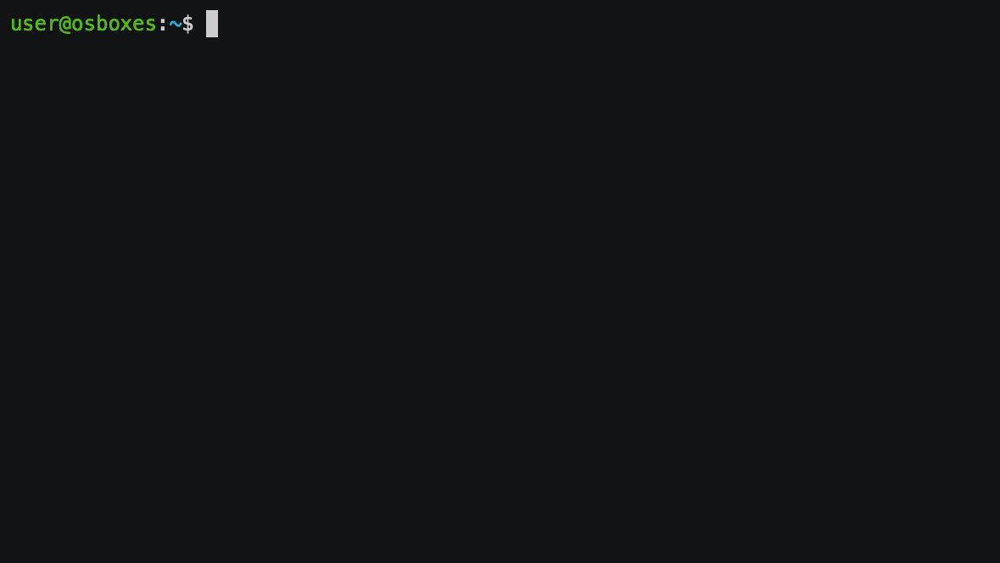
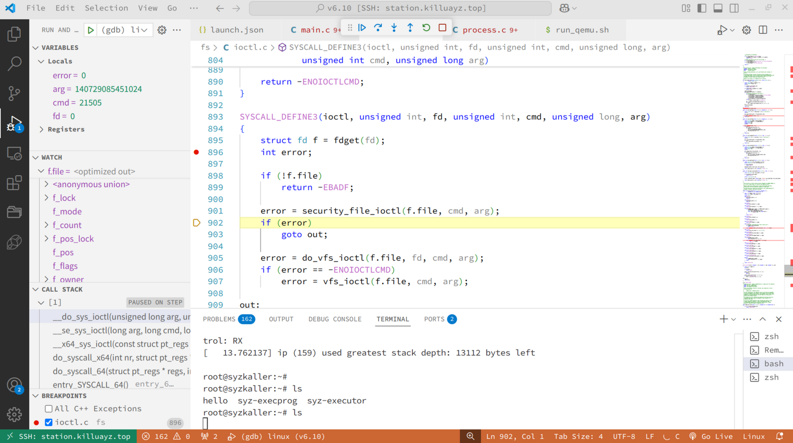

Linux内核调试#
本章内容主要介绍如何使用gdb+qemu进行linux内核的调试 参考https://www.cnblogs.com/alantu2018/p/8997149.html
内核调试配置选项#
内核中已经有了很多用于调试的功能，但是这些功能会带来性能开销，输出很多信息，因此默认是关闭的，如果想要调试内核，我们需要将其打开。
调试Linux内核时，需要开启的编译选项包括但不限于以下几个：
CONFIG_DEBUG_INFO：这个选项会使得编译出的内核包含全部的调试信息，这对于使用gdb进行调试是非常必要的。
CONFIG_KGDB：启用这个选项可以在内核配置菜单中启用kgdb支持，kgdb是一个用于内核调试的工具，支持远程调试。
CONFIG_FTRACE：启用ftrace可以用于函数跟踪，这对于调试内核函数非常有用。
CONFIG_DEBUG_PAGEALLOC：这个选项用于调试页分配问题，可以发现内存泄漏的错误。
CONFIG_DEBUG_SPINLOCK：这个选项用于调试自旋锁相关问题，可以发现spinlock未初始化及各种其他的错误。
CONFIG_DEBUG_SPINLOCK_SLEEP：这个选项用于检查spinlock持有者睡眠的情况，有助于排除死锁引起的错误。
CONFIG_DEBUG_STACK_USAGE：这个选项用于跟踪内核栈的溢出错误，有助于发现栈溢出问题。
CONFIG_DEBUG_DRIVER：这个选项用于输出驱动核心的调试信息，有助于调试驱动相关的问题。
这些选项可以通过make menuconfig命令在内核配置菜单中设置。开启这些选项后，可以编译出包含调试信息的内核，方便后续的调试工作。Linux内核还提供了很多调试选项，大家可以自行去了解。
编译#
使用make命令编译
make -j
开始调试#
运行QEMU#
qemu-system-x86_64 \
-m 2G \
-smp 1 \
-kernel $KERNEL/arch/x86_64/boot/bzImage \
-append "console=ttyS0 root=/dev/sdb earlyprintk=serial net.ifnames=0 nokaslr" \
-drive file=$IMAGE/bullseye.img,format=raw \
-net user,host=10.0.2.10,hostfwd=tinfo breakpointscp:127.0.0.1:10021-:22 \
-net nic,model=e1000 \
-enable-kvm \
-nographic \
-pidfile vm.pid \
-s -S \
2>&1 | tee vm.log
其中，-smp 1建议开启，只要不是为了研究SMP并发，就设为1，不然调试难度可能有点大。建议不要加-enable-kvm，否则添加断点的时候，就要使用hbreak，不太方便，调试时候对性能也不会有太高的要求。-append中是传给kernel的参数，一定带上nokaslr，关闭内核地址随机化，否则断点无法触发，也无法进行单步调试。-s是-s shorthand for -gdb tcp::1234，设置gdb调试的默认端口。-S是-S freeze CPU at startup (use ‘c’ to start execution)，表示在入口处停下。
命令行使用gdb连接#
在启动qemu之后，我们就开启终端执行gdb
gdb -tui $KERNEL/vmlinux
进入到gdb的界面之后，使用下面的命令，就可以调试了
target remote localhost:1234
只用最原版的gdb可能比较麻烦，我们可以添加一个gdb的模组，让gdb更加好用。这里推荐使用pwndbg，提供了更美观的界面和更丰富直观的提示信息，调试起来更舒服。

使用vscode进行调试#
配置launch.json如下，启动qemu之后，连接即可。
{
// 使用 IntelliSense 了解相关属性。
// 悬停以查看现有属性的描述。
// 欲了解更多信息，请访问: https://go.microsoft.com/fwlink/?linkid=830387
"version": "0.2.0",
"configurations": [
{
"name": "(gdb) linux",
"type": "cppdbg",
"request": "launch",
// "preLaunchTask": "vm", //if you don't want to launch vm via vscode, common this line!
"program": "${workspaceRoot}/vmlinux",
"miDebuggerServerAddress": "localhost:1234",
"args": [],
"stopAtEntry": true,
"cwd": "${workspaceFolder}",
"environment": [],
"externalConsole": false,
"MIMode": "gdb",
"miDebuggerArgs": "-n",
"targetArchitecture": "x64",
"hardwareBreakpoints": {
"require": true
},
//"logging": { "engineLogging": true },
"setupCommands": [
{
"description": "Hardware breakpoint at start",
"text": "-break-insert -h -f start_kernel", // specify your entry point label, mine was 'start_kernel'
"ignoreFailures": true
},
// {
// "text": "set arch i386:x86-64:intel",
// "ignoreFailures": false
// },
// {
// "text": "dir .",
// "ignoreFailures": false
// },
// {
// "text": "add-auto-load-safe-path ./",
// "ignoreFailures": false
// },
{
"text": "-enable-pretty-printing",
"ignoreFailures": true
}
]
}
]
}
最终我们在Vscode中便可以进行调试

打印调式信息#
BUG() 和 BUG_ON()#
BUG()和BUG_ON()可以方便地标记BUG，他们被定义在include/asm-generic/bug.h中。
#define BUG() do { \
do {} while (1); \
unreachable(); \
} while (0)
#define BUG_ON(condition) do { if (unlikely(condition)) BUG(); } while (0)
dump_stack()#
有些时候，只需要在终端上打印一下栈的回溯信息来帮助你调试。这时可以使用dump_stack()。这个函数只在终端上打印寄存器上下文和函数的 跟踪栈。
printk()#
简述#
内核提供的格式化打印函数，用法和printf()类似，在几乎任何地方，任何时候（中断上下文，进程上下文等）都可以使用，但是在终端初始化的时候是不能调用的。 也可以使用early_printk()，它在系统启动初期就具备打印能力，但只支持部分硬件体系。
LOG等级#
printk相比printf多了一个指定LOG等级的功能，内核根据这个等级判断是否将它打印在终端上。
内核支持以下几种日志级别。
如果没有提供日志级别，就默认是KERN_WARNING。
#define KERN_EMERG KERN_SOH "" /* system is unusable */
#define KERN_ALERT KERN_SOH "" /* action must be taken immediately */
#define KERN_CRIT KERN_SOH "" /* critical conditions */
#define KERN_ERR KERN_SOH "" /* error conditions */
#define KERN_WARNING KERN_SOH "" /* warning conditions */
#define KERN_NOTICE KERN_SOH "" /* normal but significant condition */
#define KERN_INFO KERN_SOH "" /* informational */
#define KERN_DEBUG KERN_SOH "" /* debug-level messages */
#define KERN_DEFAULT KERN_SOH "" /* the default kernel loglevel */
参考的qemu运行脚本#
#!/bin/bash
KERNEL=./arch/x86_64/boot/bzImage
# KERNEL=/new-pool/linux_kernel/kernel/v6.10/arch/x86/boot/bzImage
IMAGE=/new-pool/linux_kernel/Kernel_Fuzzing_Env/kernel/images/buster.img
# 初始化 DEBUG 为 0，表示未启用调试模式
DEBUG=0
DEBUG_FLAGS=""
KVM_FLAGS="-enable-kvm"
# 使用 getopts 处理短选项 -d
while getopts ":d" opt; do
case $opt in
d)
DEBUG=1
;;
\?)
echo "无效的选项: -$OPTARG"
exit 1
;;
esac
done
# 根据 DEBUG 的值输出结果
if [ $DEBUG -eq 1 ]; then
echo "调试模式已启用。"
DEBUG_FLAGS=" -s -S "
KVM_FLAGS=""
else
echo "调试模式未启用。"
fi
sudo qemu-system-x86_64 \
-m 2G \
-smp 2 \
-kernel $KERNEL \
-append "console=ttyS0 root=/dev/sda earlyprintk=serial net.ifnames=0 nokaslr" \
-drive file=$IMAGE,format=raw \
-net user,host=10.0.2.10,hostfwd=tcp:127.0.0.1:10021-:22 \
-net nic,model=e1000 \
$KVM_FLAGS \
-nographic \
$DEBUG_FLAGS \
-pidfile vm.pid \
2>&1 | tee vm.log